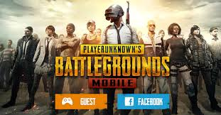
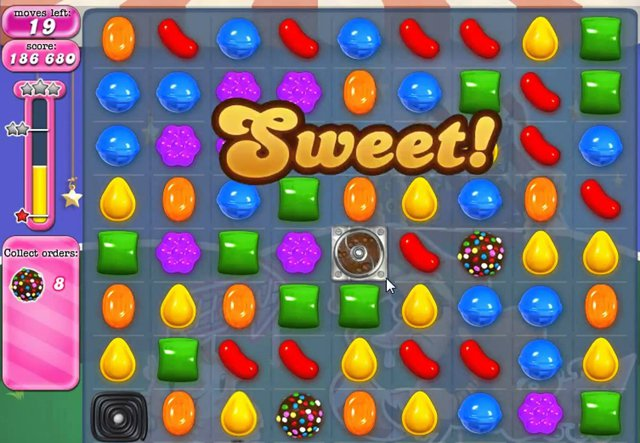
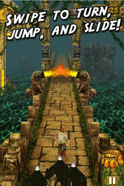

A game is a structured form of play, usually undertaken for enjoyment
and sometimes used as an educational tool. Games are distinct from
work, which is usually carried out for remuneration, and from art, which is
more often an expression of aesthetic or ideological elements.
CRIMINAL CASE
Criminal Case is a detective-themed hidden object game released on November 15, 2012 for Facebook.
An iOS version was released worldwide on August 28, 2014, followed by an Android version on April 15, 2015.

Article2
A game is a form of art in which participants, termed players, make decisions in order to manage
resources through game tokens in the pursuit of a goal. A game's tools and rules will result in
its requiring skill, strategy, luck, or a combination thereof, and are classified accordingly.
CANDY CRUSH
Candy Crush Saga is a free-to-play match-three puzzle video game released by King on April 12,
2012, for Facebook; other versions for iOS, Android, Windows Phone, and Windows 10 followed.
It is a variation of their browser game Candy Crush.

Article3
Games are sometimes played purely for entertainment, sometimes for achievement or reward as well.
They can be played alone, in teams, or online; by amateurs or by professionals.
"A game is a system in which players engage in an artificial conflict, defined by rules,
that results in a quantifiable outcome.
TEMPLE RUN
Temple Run is a 2011 3D endless running video game developed and published by Imangi Studios.
It is produced, designed and programmed by husband-and-wife team Keith Shepherd and Natalia
Luckyanova, and with art by Kiril Tchangov.
